原视频：Bilibili · BV1vgQGBREyJ（时长约 83 分钟） 课程：南京大学《操作系统原理》（2026）第 13 讲 整理说明：本书由视频语音转录后经 AI 重构而成；口语已转为书面语；关键时间点标注 (参考时间)，截图占位对应视频位置。
1. 从虚拟化到并发：为何要共享内存
(参考时间: 00:00)
虚拟化部分可以收成一句话：计算机从 CPU reset 开始，固件加载 OS，OS 再 execve 出应用世界；对上是 system call API，再往上是 libc 与应用生态，对下可兼容多种体系结构。
今天进入并发编程。标题里的「放弃」不是劝退并发，而是让你意识到：多处理器上的共享内存编程会碰到哪些反直觉困难。
1.1 顺序模型的两个不够用
顺序（sequential）程序是状态机：按语句/指令一步步迁移。写 HTTP 服务器时问题立刻出现：
read可能长时间阻塞，CPU 却还有别的请求可处理；- 现代机器本身是多处理器，物理内存对多个 CPU 是同一地址空间——不用白不用。
用 fork 出大量进程可以并行，但回收结果要走管道等 IPC，很麻烦。自然需求是：多个执行流共享同一内存，直接读写全局结果。
1.2 线程：共享全局、独享栈
在「栈 + 全局变量」的程序模型上，扩展为：
- 每个线程（共享地址空间、但有独立执行栈的执行流）拥有自己的 stack frame 链与 PC；
- 全局数据与代码共享；
- 迁移 = 选中某个线程的「栈+全局」当作一个进程，执行一条语句。
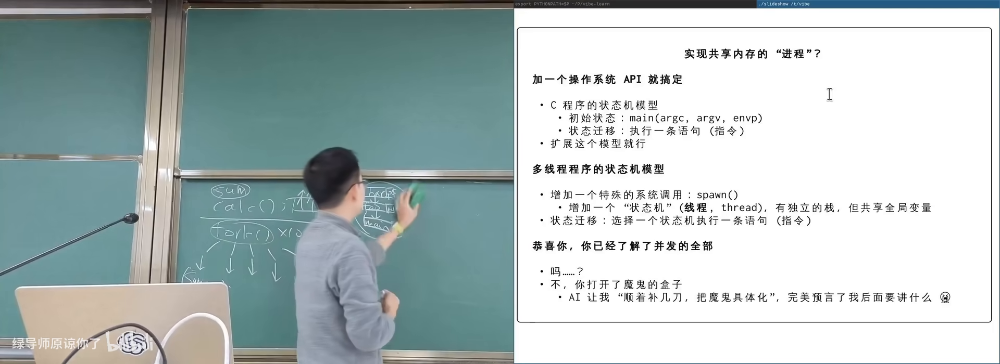
线程模型：多栈共享全局在 B 站打开 (00:12:00)
图：可关注 T1/T2 各有栈、共用 global。
flowchart TB
subgraph Shared["共享地址空间"]
G["全局变量 / 代码"]
end
subgraph T1s["线程 T1"]
S1["私有栈 + PC"]
end
subgraph T2s["线程 T2"]
S2["私有栈 + PC"]
end
S1 --> G
S2 --> G
最小 API 即可表达全部并发控制的起点：
spawn(f)：创建入口为f的新线程；join()：等待已创建线程结束。
在指令集意义上：地址空间平坦；每线程有自己的寄存器（含 SP），指向自己栈区。
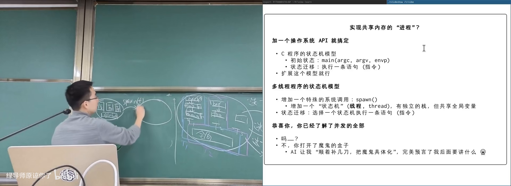
spawn：在既有线程上新增栈帧 F在 B 站打开 (00:14:00)
图：可关注 spawn 不复制全局，只增加一条独立执行链。
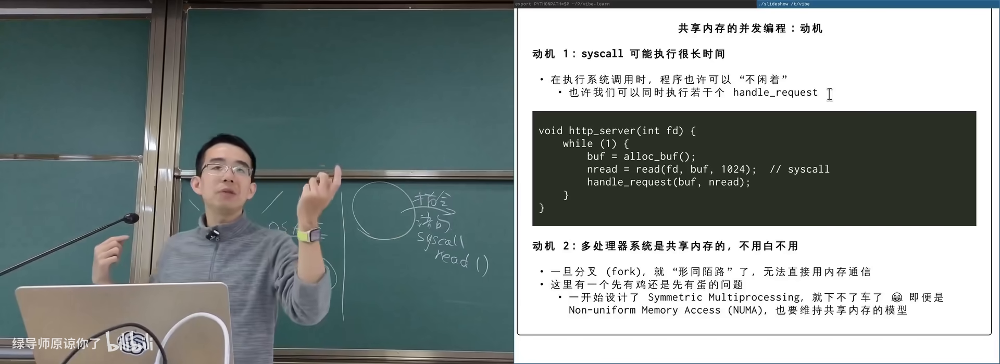
并行动机：多核共享物理内存在 B 站打开 (00:07:50)
图：可关注 CPU1/CP2 访问同一物理地址时的数据可见性假设。
2. 最小线程库与实验
(参考时间: 00:19:40)
课程提供极简线程库：spawn 创建线程（线程号从 1 起），join 等待全部返回（实现上是对 pthread 的简化包装）。
void ta(int id) { while (1) putchar('A'); }
void tb(int id) { while (1) putchar('B'); }
int main() {
spawn(ta);
spawn(tb);
join();
}
运行可见 A/B 随机交替——符合并发/并行预期。
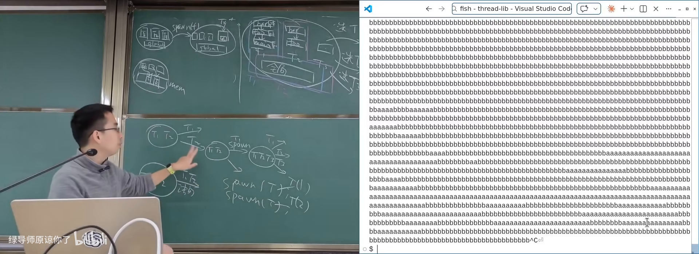
spawn/join 输出交替字符在 B 站打开 (00:23:30)
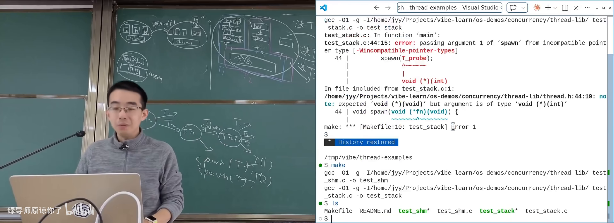
验证共享内存：一写一读 x/y在 B 站打开 (00:26:00)
图：可关注 x 增长快于 y，说明数据确实在共享。
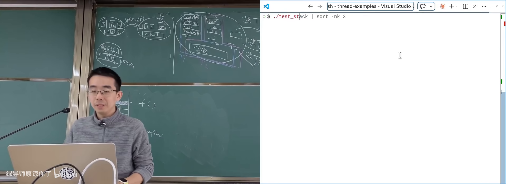
栈大小实验：递归逼近 overflow在 B 站打开 (00:29:00)
图：可关注 high/low 地址范围逼近约 8MB。
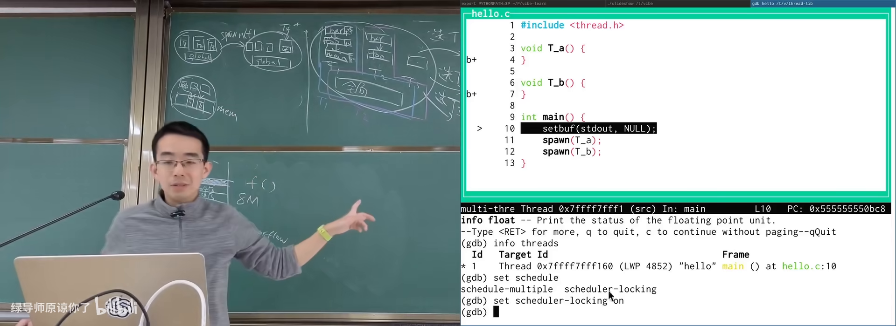
GDB info threads 与 scheduler-locking在 B 站打开 (00:33:30)
图：可关注多线程单步时切换 thread 编号。
2.1 用实验验证模型
| 问题 | 实验思路 |
|---|---|
| 数据共享吗 | 一个线程写 x，另一个/main 读 x |
| 代码共享吗 | 两线程调用同一函数并取地址 |
| 栈独立吗 | 打印局部变量地址；甚至跨线程传局部变量指针 |
| 栈多大 | 无穷递归并记录局部变量地址范围，溢出前统计 |
栈大小实验可测得约 8192 KB（8MB）——创建线程时就要在地址空间里划出固定栈区，与「主线程栈几乎可无限长」不同。
2.2 多线程也能 GDB
info threads 查看线程；set scheduler-locking on 让调试时只有当前线程推进（模拟「每次只选一个线程执行一步」的概念模型），再用 thread N 切换。
3. 并发、并行与确定性的丧失
(参考时间: 00:16:30)
3.1 术语
- 并发（concurrency）：逻辑上同时推进，可能只是单核交错调度；
- 并行（parallelism）：物理上同时执行（多核）。
并行一定是并发；并发不一定是并行。
3.2 确定性：顺序世界的安全感
数学函数与顺序状态机都有确定性：给定状态，下一状态唯一；同一输入，同一输出。测试通过就能复现。
共享内存并发彻底打破这一点：线程相对速度无保证；每一步都可以选 T1 或 T2，状态空间指数爆炸。测一百万次通过，不代表 OJ 会过。
3.3 反直觉案例
银行转账：两线程同时「检查余额够 → 扣款」，都可能看到余额够，重复扣款；无符号整数下还可能变巨款。
网游复制 bug（事件并发）：捡起物品与点击地上道具交错，全局「手中物品」被覆盖，实现物品复制。
sum++ 都算不对：
// 两线程各 N 次
sum = sum + 1; // load / add / store
交错会导致互相覆盖，最终远小于 2N。多跑几次结果都不同。
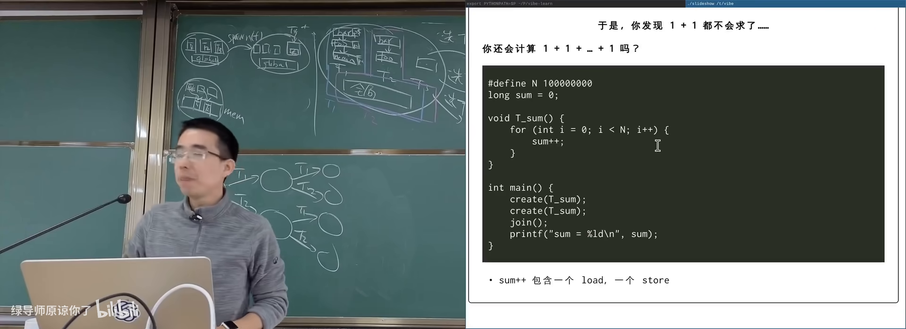
sum++ 非确定结果在 B 站打开 (00:48:30)
更难的概念题：三线程各做两次 sum++（每次=load, tmp+1, store），在允许任意交错下 sum 最小值 可以是 2 而非直觉的 3。把各线程读写历史拼成全局合法顺序，是 NP 完全 量级的搜索——与非确定性图灵机、NP 理论相关。
flowchart LR
S0["状态 0"] -->|"选 T1"| S1["状态 1"]
S0 -->|"选 T2"| S2["状态 2"]
S1 -->|"选 T1 或 T2"| S3["..."]
S2 -->|"选 T1 或 T2"| S3
S3 --> EXP["指数级交错空间"]
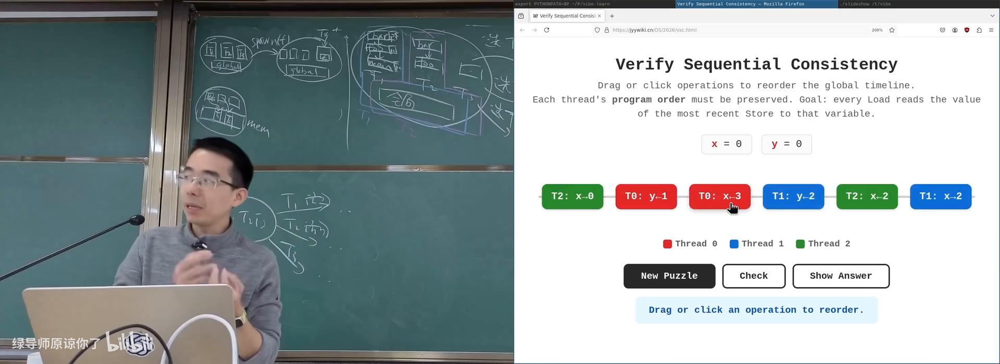
交错调度小游戏：验证顺序一致性在 B 站打开 (00:51:00)
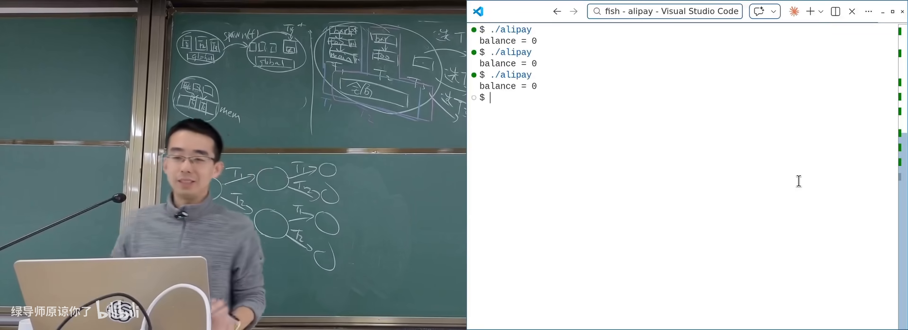
银行转账竞态：check 与 write 分离在 B 站打开 (00:43:30)
图：可关注两线程都看到余额够，导致重复扣款。
4. 编译器与硬件也在「并发地」改写你
(参考时间: 01:00:00)
4.1 编译优化与共享变量
编译器默认程序近似顺序、除系统调用外可自由优化（合并 x++ 等）。但其他线程可能改同一变量——优化前提被打破。
反例：用 while (!flag); 等待另一线程置位。编译器认为 flag 不会被本线程改，可能改写成「只判断一次否则死等」，正确性依赖被优化掉。
可选的脆弱手段（课程不推荐当作并发方案）：
- compiler barrier：如
asm volatile("" ::: "memory")，阻止优化跨越； - volatile：禁止某些合并/省略（设备寄存器等场景更正统）。
同一份 sum 代码：-O1 可能把 load/store 拉开成很长窗口（更易交错出错）；-O2 可能把循环压成一次加减（碰撞窗口极短，测试「看起来都对」）。测试通过不是并发程序正确的证据。
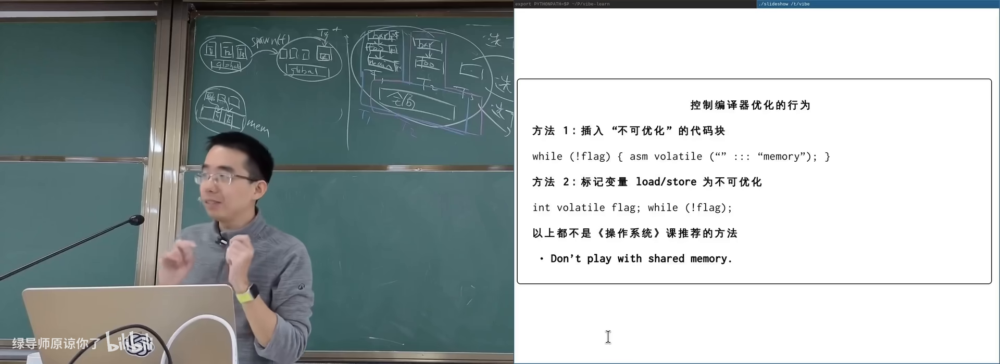
编译优化改写 while(!flag) 与 sum 循环在 B 站打开 (01:08:30)
图：可关注 O1 长窗口 vs O2 被压掉循环的差异。
4.2 CPU 也是「编译器」
现代处理器：多发射、乱序、分支预测、cache。概念上「每次选一线程执行一条」并不存在；更接近每个核有自己的读写缓冲/缓存视图，最终才趋于一致（弱内存模型）。
经典 litmus：T1: x=1; r1=y; T2: y=1; r2=x;
顺序一致性下不应看到 (r1,r2)=(0,0)；真实多核上几乎总看到 00——写还没对另一核可见就去读。
弱内存模型：00 结果实验在 B 站打开 (01:19:00)
结论：Don't play with shared memory——并发课要学的是受控同步，而不是手搓内存序。
flowchart LR
subgraph Core0["CPU 0"]
W0["x=1 写入本地视图"]
end
subgraph Core1["CPU 1"]
W1["y=1 写入本地视图"]
end
W0 -.->|"未及时同步"| R1["r1=y 读到 0"]
W1 -.->|"未及时同步"| R0["r2=x 读到 0"]
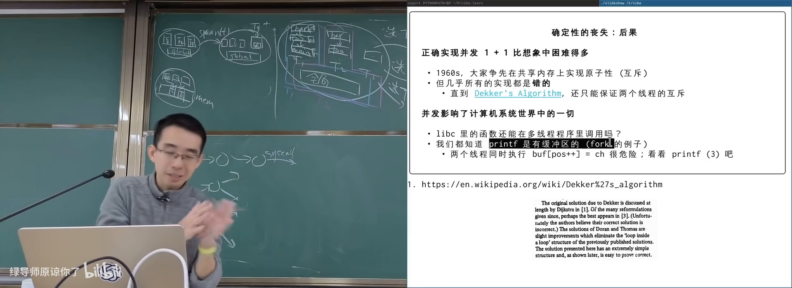
printf 缓冲区与多线程交错风险在 B 站打开 (00:56:30)
图：可关注多线程共享 buffer position 的隐患。
5. 并发如何冲击「一切 API」
(参考时间: 00:55:00)
printf 内部有缓冲区；多线程若都改 position、写字符，就会重演 sum++。好消息是系统设计者会标注接口的并发属性：
- 多数 printf 族是线程安全的（不会损坏内部结构）；
- 不保证「多次调用的输出原子交错成你要的句子」；
memcpy等同内存重叠时不保证你想要的交错语义，但通常不会「把进程搞崩」以外的魔法。
几乎全部系统调用可在多线程下正确调用，但行为细节可能变化。并发影响计算机系统里的一切：一旦程序可能是多线程的，API 设计与使用都要重新审视。
后续几讲的主题：用互斥、同步等机制控制不确定性，而不是假装它不存在。
附录：概念补给
线程（thread）
- 是什么：共享地址空间、独立栈与寄存器的执行流。
- 课上为何出现：多处理器共享内存编程的基本执行单元。
- 和什么像：同一办公室多人，共用文件柜，各有草稿本。
spawn / join
- 是什么：创建线程 / 等待线程结束的最小 API 对。
- 课上为何出现：极简线程库的全部接口。
- 和什么像：派活与等交作业。
并发 vs 并行
- 是什么：逻辑同时推进 vs 物理同时执行。
- 课上为何出现：区分单核交错与多核真并行。
- 常见误解：并发程序不一定更快；并行必须有多个执行资源。
确定性（determinism）
- 是什么：状态确定则后续与输出唯一。
- 课上为何出现：顺序程序的隐含前提，被并发摧毁。
- 和什么像：按剧本演戏 vs 即兴群戏。
竞态（race condition）
- 是什么：结果取决于多个执行流交错时序的脆弱状态。
- 课上为何出现：sum++、转账、复制 bug 的共同结构。
- 和什么像：两人同时改同一份文档且无锁。
数据竞争（data race）
- 是什么：至少一写、无同步地并发访问同一内存。
- 课上为何出现：C/C++ 中属未定义行为，不可「碰运气」。
- 常见误解：不是「偶尔读到旧值」这么简单，优化后逻辑可被改写。
弱内存模型
- 是什么：硬件不保证其他核立刻看到你的写，只保证最终/按某些规则可见。
- 课上为何出现：解释为何顺序模型下不可能的 00 会出现。
- 和什么像：各人先写便签，稍后才贴到公告栏。
编译器屏障 / volatile
- 是什么：限制编译器优化合并的手段。
- 课上为何出现：不能替代真正的并发控制。
- 常见误解：volatile ≠ 线程安全，也不建立内存序。
未定义行为（UB）
- 是什么：标准/实现不保证任何结果的程序状态。
- 课上为何出现：数据竞争、错误内存使用都可能落入 UB。
- 和什么像：说明书空白页：出事厂商不负责。
Online Judge 与非确定性
- 是什么：评测环境的调度与本机不同，暴露交错差异。
- 课上为何出现：解释「本地过了 OJ 挂了」。
- 和什么像：同一首歌不同耳机听感不同——环境也是输入。
书架 Shelf 流水线生成 · 内容衍生自 B 站公开课程视频 BV1vgQGBREyJ